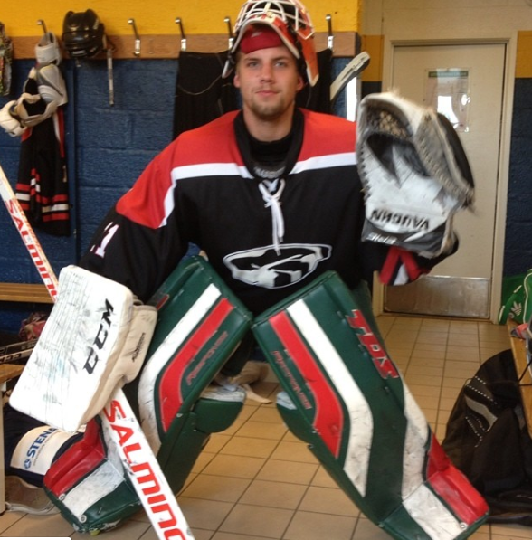

My report page in the course

This is my report-page in the course. This page contains a presentation of myself. Keep this site updated all through the course and hand it in, for grading, in the end of the course.
So, a presentation might be in order. I'll begin.
My name is André Sandin, born and raised in Kristianstad, Skåne, I was born 1993 which makes me 26 years old. I've been playing a lot of sports during my childhood and still does some but nowadays it's just with friends. I liked to play ice-hockey, floorball and football. I played floorball and hockey and attained the Österänggymnasium in Kristianstad where I studied to become a chef. I've been working as a chef, construction worker, kindergarden teacher and as a sökspecialist at Eniro.
Sport had allways been a big part of my life since both my parents are very interested in sports but something I haven't gotten from them is my love for computer games.
When I was done with school I worked for a couple of years before I decided to go for a backpacking trip in Asia where I was for 3 months, during that time I stayed in Indonesia, Cambodja, Vietnam, Singapore and different parents of Thailand.
Lets keep in touch in the chatt and through GitHub!